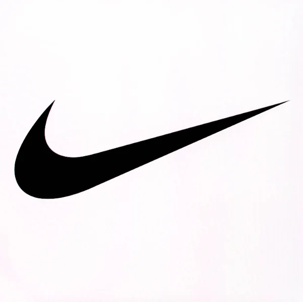
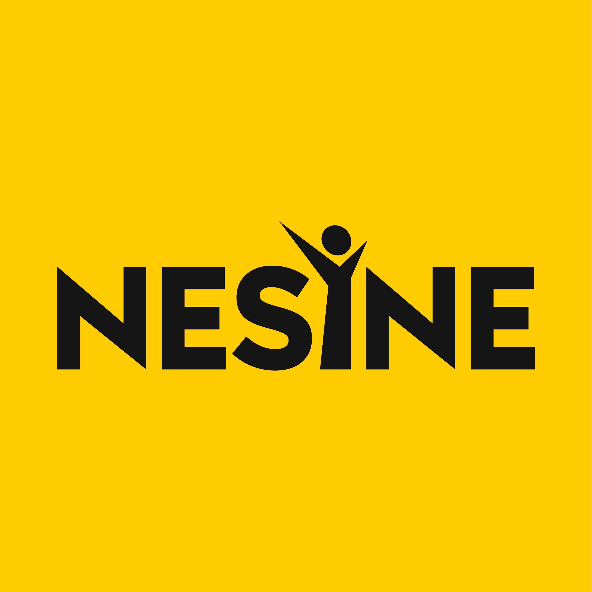

+150%
Atyarisi branch market share growth in initial launch phase.
Portfolio CV
I started in retail operations and moved into CRM analytics, applying the same execution mindset across each step. My work style is execution-first: diagnose quickly, prioritize impact, and ship measurable changes.
+150%
Atyarisi branch market share growth in initial launch phase.
+20%
Engagement uplift versus prior cohort baseline across 2 segmentation campaigns.
61
Retail doors tracked with inventory and financial KPI monitoring.

2023 - present
Logistics Analyst (2025 - present): Own inventory and financial KPI tracking across 61 retail doors to support stock, partner, and risk decisions.
Built and maintain an allowance tracking dashboard to monitor return limits and financial exposure.
Execute SAP-based stock adjustments and order corrections to maintain data integrity and operational transparency.
Retail Sales Intern (2023 - 2024): Conducted store-level KPI analysis (conversion, margin, sell-through, stock coverage) across 54 doors.
Built Excel + Tableau reporting infrastructure to standardize KPI visibility and speed up commercial decision cycles.
Flagged underperforming categories, collaborated with merchandising on product-level optimization, and supported new store openings.

2024
Conducted retention, churn, and cohort analyses to support lifecycle strategy for a high-frequency user platform.
Designed and executed segmentation-based campaigns using behavioral data; delivered +20% engagement uplift across 2 cohort campaigns.
Built revenue forecasting models to guide budget allocation and translated CRM KPIs into growth actions.
Supported Atyarisi launch with SQL + Tableau, contributing to +150% initial market share growth in the branch.

2022 - 2023
Acted as Scrum Master on a telecom data transformation project, coordinating sprint planning and cross-functional delivery.
Contributed to an internal project predicting customer reactions using generative AI techniques.
Built a Python-based PDF parser to detect anomalies in vendor contracts.
Feb 2026 - present
Full-stack social check-in platform with public profiles, feed, follows, and comments.
Includes notifications, activity heatmaps, TR/EN localization, and PWA support.
Built with Next.js, TypeScript, Tailwind, Supabase, and SQL RLS. Also includes an Expo React Native mobile MVP.
Open ProductIstanbul, Turkey